Hong Kong → Guizhou → Gannan → Silk Road → Beijing → Shenzhen
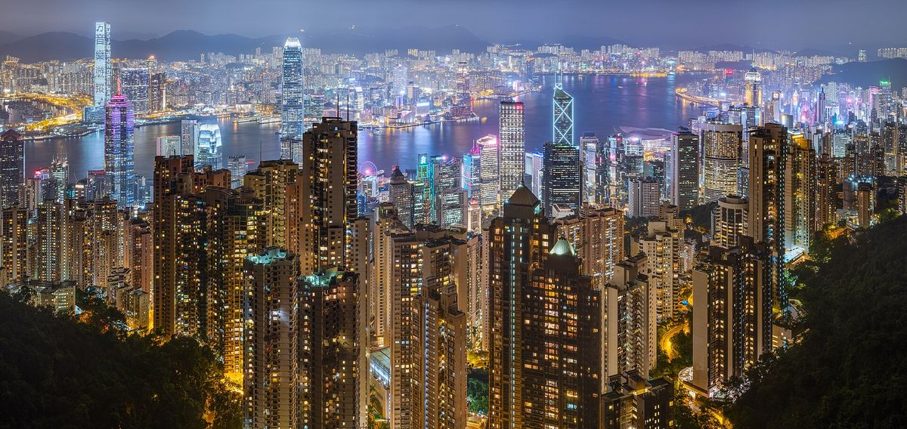
About 6,000 km of ground, one internal flight inside the adventure leg, and two more to reach the work cities. Hong Kong is both the front door and the back door.
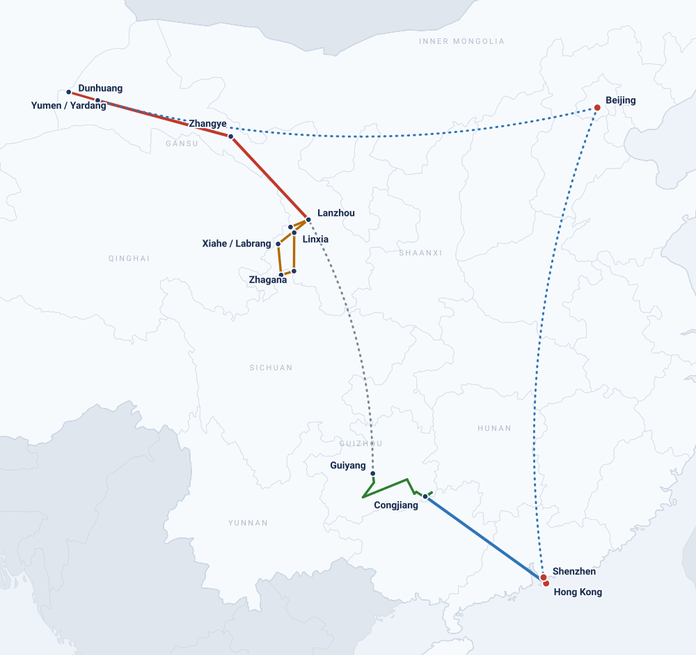
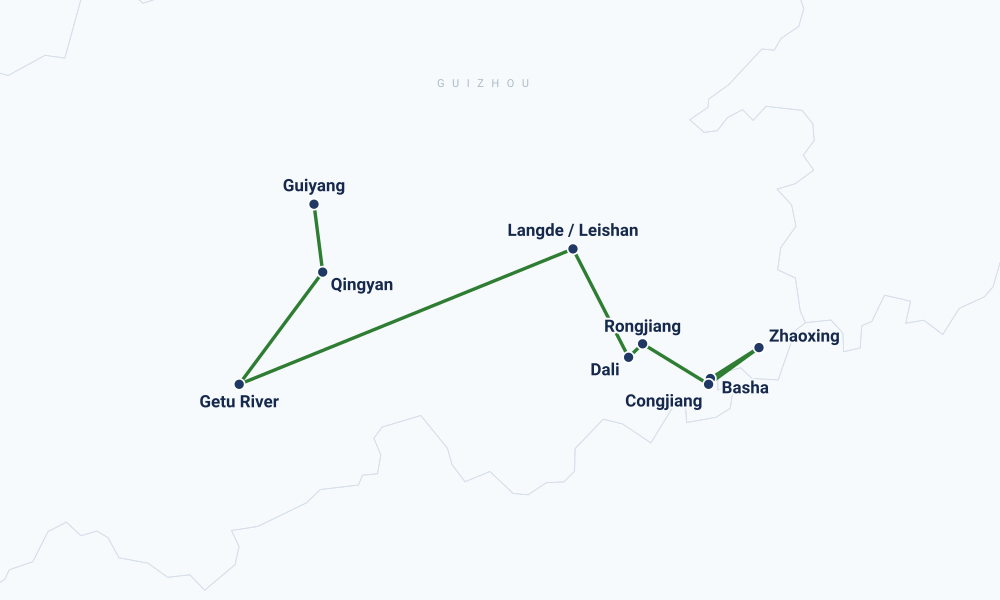
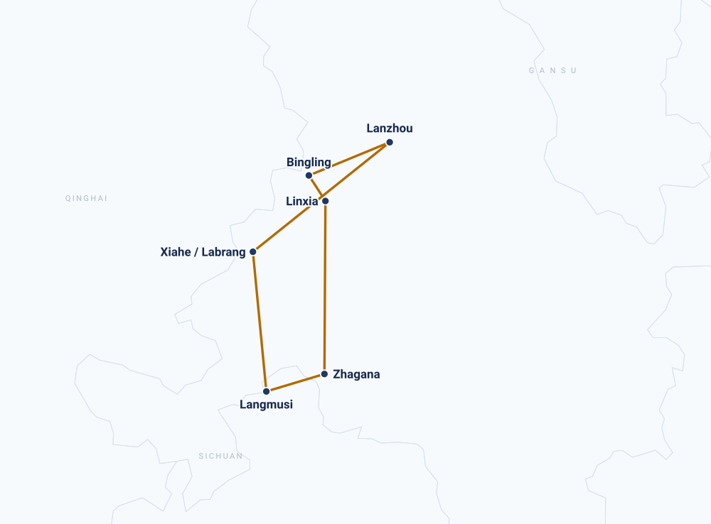
Every row links to its detail below. Bold rows are fixed commitments — everything else can move.
| Date | Where | What |
|---|---|---|
| Getting there | ||
| Wed Aug 26 | Columbus | Depart CMH, evening. Connect at a US hub. |
| Thu Aug 27 | in the air | Transpacific departs after midnight (JFK ~01:35, or SFO/LAX ~00:05–00:30). |
| Act I · Guizhou | ||
| Fri Aug 28 | Hong Kong → Zhaoxing | Day 1 — land HKG 06:30, rail West Kowloon → Congjiang |
| Sat Aug 29 | Zhaoxing | Day 2 — Tang'an terraces on foot |
| Sun Aug 30 | Basha → Rongjiang | Day 3 — Basha, and west to Rongjiang |
| Mon Aug 31 | Dali → Leishan | Day 4 — Dali indigo, then the long road north |
| Tue Sep 1 | Langde | Day 5 — Leigongshan ridges |
| Wed Sep 2 | Getu River | Day 6 — Getu River karst · flexible day |
| Thu Sep 3 | Qingyan → Guiyang | Day 7 — Qingyan, and the food night |
| Act II · Gannan | ||
| Fri Sep 4 | → Lanzhou → Xiahe | Day 8 — north-west, to south of the Yellow River |
| Sat Sep 5 | Xiahe | Day 9 — Labrang |
| Sun Sep 6 | Langmusi | Day 10 — Langmusi, on the provincial line |
| Mon Sep 7 | → Zhagana | Day 11 — Namo gorge, then into Zhagana |
| Tue Sep 8 | Zhagana | Day 12 — Zhagana, all day |
| Wed Sep 9 | → Linxia | Day 13 — down off the plateau, into Hui country |
| Thu Sep 10 | Bingling → Lanzhou | Day 14 — grottoes by boat, then the city |
| Act III · Silk Road | ||
| Fri Sep 11 | → Zhangye | Day 15 — rainbow rock |
| Sat Sep 12 | → Dunhuang | Day 16 — dawn colour, then deeper into the desert |
| Sun Sep 13 | Dunhuang | Day 17 — the western passes · flexible day |
| Mon Sep 14 | → Beijing | Day 18 — Mogao, and out |
| The work block | ||
| Tue Sep 15 | Beijing | Clear — rest, hutongs, Beihai at golden hour |
| Wed Sep 16 | Beijing | Tsinghua SEM seminar · Romy: Forbidden City |
| Thu Sep 17 | Beijing | PKU Guanghua · Romy: the Great Wall |
| Fri Sep 18 | Beijing | Buffer — Temple of Heaven at 7am, then 798 |
| Sat Sep 19 | → Shenzhen | Panjiayuan in the morning, afternoon flight |
| Sun Sep 20 | Shenzhen | The east coast — Dapeng Fortress and Xichong |
| Mon Sep 21 | Shenzhen | CUHK-Shenzhen · Romy: Dafen and Huaqiangbei |
| Tue Sep 22 | Shenzhen | PKU HSBC (PHBS) · Romy: Nantou, OCT Loft |
| Wed Sep 23 | → HKG → home | Futian → West Kowloon → HKG |
The seminar paper is the FIRE piece, about an hour, open to faculty as well as the PhD students.
This rates tourist crowding, not population — Linxia is a busy city and an empty tourist site. Ratings are honest rather than flattering; where a place is oversold, it says so.
●○○○○ Empty — you may see no other outsiders all day.
●●○○○ Quiet — a handful of people, no infrastructure for crowds.
●●●○○ Steady — domestic visitors, but never a queue.
●●●●○ Busy — coach groups. Go at the edges of the day.
●●●●● Mobbed — plan around it or skip it.
| Place | Crowding | What that actually means |
|---|---|---|
| Act I · Guizhou | ||
| Zhaoxing | ●●●●○ busy | Day-trippers from Guilin and Guiyang fill the drum-tower square midday. It empties after dark and before 8am — which is exactly when you are there. |
| Tang'an terraces | ●●○○○ quiet | Two hours up a stone path filters out almost everyone. |
| Basha | ●●●○○ steady | Groups arrive for the arranged welcome ceremony. Before 9am it is nearly yours. |
| Zhanli | ●○○○○ empty | No tourism infrastructure at all. |
| Dali Dong village | ●●○○○ quiet | A working indigo village, not a set. |
| Langde | ●●●○○ steady | Langde itself stages a welcome for groups. The hamlets on the ridge above it do not. |
| Leigongshan ridges | ●○○○○ empty | Three villages in a day and no other outsiders. |
| Getu River | ●●●○○ steady | A real domestic Chinese draw with near-zero foreigners. The boats queue at midday. |
| Qingyan | ●●●●● mobbed | Guiyang's weekend outlet. The coaches leave at dusk — that is your window, and the reason this is an evening stop. |
| Xijiang Qianhu (not on the itinerary) | ●●●●● mobbed | The 1,000-household Miao village every standard tour includes. This is why yours does not. |
| Act II · Gannan | ||
| Xiahe / Labrang | ●●●○○ steady | Chinese tour groups plus genuine pilgrims. The dawn kora is the quiet, serious version of the same place. |
| Sangke grassland | ●●○○○ quiet | Horse-riding stalls at the roadside; empty within ten minutes' walk. |
| Ganjia basin | ●○○○○ empty | The octagonal walled ruin gets almost nobody. |
| Langmusi | ●●●○○ steady | A small backpacker stop with two working monasteries either side of the provincial line. |
| Namo gorge | ●●○○○ quiet | Thins out within the first twenty minutes of the climb. |
| Zhagana — village floor and viewpoints | ●●●●○ busy | Correcting the earlier draft: Zhagana is now a genuine domestic-tourism hit, heavily posted on Chinese social media. The valley floor and the main viewpoints get busy in September. It is true that almost no foreign visitors reach it — that is not the same as empty. |
| Zhagana — the trails out of the basin | ●○○○○ empty | An hour above the floor and the crowd disappears completely. This is where the solitude actually lives, so take the longest trail you have daylight for. |
| Linxia | ●●○○○ quiet | A working Hui city — busy with life, not with tourists. Foreign visitors are rare enough to be noticed. |
| Bingling Temple | ●●○○○ quiet | Boat-only access is a natural filter. |
| Act III · Silk Road | ||
| Zhangye Danxia, midday | ●●●●● mobbed | One of the most photographed places in China. Shuttle buses, boardwalks, queues at the viewing platforms. |
| Zhangye Danxia, at opening | ●●●○○ steady | The same park, transformed. This is why Day 16 starts with an alarm. |
| Binggou canyon | ●●●○○ steady | Five minutes away from the famous one and a fraction of the people. |
| Mingsha Shan / Crescent Lake | ●●●●● mobbed | Camels, quad bikes, sandboards, a lot of noise. Walk twenty minutes out along the dune ridge and it thins fast. |
| Yumen Pass & Han Great Wall | ●●○○○ quiet | Two hours into empty gravel plain. The emptiest place on the trip. |
| Yardang geopark | ●●●○○ steady | A compulsory park bus means you move as a group; the outer loop is much quieter. |
| Mogao Grottoes | ●●●●○ busy | Hard 6,000/day cap and timed tours, so it is busy but never chaotic. The English tour is under-subscribed, so your own group will be small. |
| Beijing | ||
| Forbidden City | ●●●●● mobbed | Reservation-only and it sells out. Enter at opening and walk the side courtyards, not the central axis. |
| Jingshan Park | ●●●○○ steady | The hill immediately north — the view down over the Forbidden City roofs, and the reason to pair the two. |
| Great Wall — Mutianyu | ●●●●○ busy | Restored, cable car, toboggan. Easy and crowded. |
| Great Wall — Jinshanling | ●●○○○ quiet | ~2.5h drive. Partly unrestored, dramatic, and the photographers' choice. Worth the extra hour each way. |
| Great Wall — Jiankou | ●●○○○ quiet | Genuinely wild and steep. Not a solo first-timer outing. |
| Temple of Heaven park at 7am | ●●●○○ steady | Locals doing tai chi, ballroom dancing, jianzi. Arguably the best hour available in Beijing. |
| Summer Palace | ●●●●● mobbed | Beautiful and completely overrun. Skip unless Romy specifically wants it. |
| Lama Temple (Yonghegong) | ●●●●○ busy | Working temple, heavy incense, real worshippers. Early is better. |
| 798 Art District | ●●●○○ steady | Former factory complex, now galleries. Half a day. |
| Hutongs — Wudaoying, Dongsi | ●●●○○ steady | The lived-in ones rather than the Nanluoguxiang tourist strip. |
| Panjiayuan flea market | ●●●●○ busy | Only really itself on Saturday and Sunday mornings — which is exactly Sep 19. |
| Shenzhen | ||
| Dafen Oil Painting Village | ●●●○○ steady | Thousands of painters producing copies of the masters to order. Nowhere else is like it. |
| Huaqiangbei electronics market | ●●●●○ busy | The largest electronics market on earth, floor after floor of components. |
| OCT Loft / Sea World | ●●●○○ steady | Converted industrial blocks, galleries, coffee, evening crowds. |
| Nantou Ancient Town | ●●●○○ steady | A 1,700-year-old walled town swallowed by the city and recently restored. |
| Wutong Shan | ●●●○○ steady | Shenzhen's high point, 944 m. Mobbed at weekends, near-empty on a Monday. |
| Dapeng Fortress & the east coast | ●●○○○ quiet | Ming garrison town plus the Xichong and Yangmeikeng coast, ~1.5h out. The best day out from Shenzhen by a wide margin. |
| Shenzhen Bay / Talent Park | ●●○○○ quiet | Waterfront promenade with Hong Kong's hills directly across the water. |
1 · Fly in and out of Hong Kong, not Beijing. This is the whole unlock. Transpacific flights to Beijing all leave the US around midday and land in the evening, so departing Columbus on the night of Aug 26 buys you nothing. Flights to Hong Kong leave the US after midnight and land at about 06:30 — so a Wednesday-evening CMH departure puts you on the ground in Asia the morning of Fri Aug 28 instead of that night. That is a full extra day. Hong Kong is also where the trip ends: Shenzhen is twenty minutes from Hong Kong West Kowloon, so one round trip covers both ends and matches PHBS's "to or from Shenzhen or Hong Kong" reimbursement rule.
2 · Enter overland, and delete a flight. From Hong Kong West Kowloon a single high-speed train runs into Guizhou on the Guangzhou–Guiyang line, stopping at Congjiang — about four hours, and Zhaoxing is half an hour from the station. That removes the Beijing→Guiyang flight entirely and turns the arrival day into a productive travel day instead of a wasted evening.
3 · The extra day kills the worst drive. The old Day 13 was seven hours of pure transit from Zhagana to Lanzhou. It is now split: a night in Linxia, the Hui Muslim city at the edge of the plateau, then Bingling Temple — cliff-carved Buddhist grottoes reached by boat on the Yellow River — on the way into Lanzhou. A bad day became two good ones.
4 · Romy runs her own days during the work block. Four of the nine days in Beijing and Shenzhen are seminar days. Those now have a plan for Romy rather than a gap, and the reservations they need are on the to-do list — several are real-name, passport-required, and sell out.
5 · Same landing point. You are still in Beijing the evening of Sep 14, with Sep 15 clear before the Tsinghua seminar on Sep 16. Nothing on the work side moved.
1 · The passport. It is with the visa agent (ServiceIn/CEV, invoice #687441) against a target return of ~Aug 20. An Aug 26 departure leaves six days of margin. Call, confirm that date against Aug 26, and price the expedite. As a US citizen you must re-enter the United States on the US passport, so the Greek-passport fallback does not remove this dependency — nothing here is bookable with confidence until it is in your hand.
2 · What the visa actually says when it arrives. Check three fields before you confirm any ticket: the enter before date is on or before Aug 28; the duration of stay per entry covers Aug 28 → Sep 23, which is 26 days; and it is the multiple-entry F. Separately, the signed Tsinghua letter covers Sep 1–30 and names Beijing only, and you now enter three days early at a rail port in the south. That is normally a non-issue on an issued F visa, but carry the letter and this itinerary printed.
3 · Romy's visa-free entry at West Kowloon. She enters on the Greek passport under China's unilateral visa-free scheme. Confirm before you book the train that the scheme is honoured at the Hong Kong West Kowloon mainland port for a Greek passport — some entry schemes are port-restricted, and that would be an expensive thing to discover at the barrier. If the answer is anything short of a clear yes, fly HKG → Guiyang instead (about 2h, several daily) and pick up the rail to Congjiang from Guiyang; the day still ends in Zhaoxing. Her clock either way: in Aug 28, out Sep 23, 26 days against a 30-day limit. Do not extend the tail — and see the warning under Sep 20 about not popping over to Hong Kong mid-trip.
4 · Mogao tickets. Foreigners cannot book through the WeChat mini-program. The foreigner allocation is sold in person at the Digital Exhibition Centre, about 9 km outside Dunhuang. Get it in writing from the operator: how, and when, they will secure the 9am English tour on the ¥258 "A" ticket.
5 · Rain. September closes mountain roads in both Guizhou and Gannan occasionally. Day 6 (Getu River) and Day 17 (western desert) are the two days to sacrifice if it comes to that. Everything else is load-bearing.
Three acts, one internal flight, two rail legs. Act I is subtropical village China — Dong and Miao, indigo, sour fish soup, karst. Act II is the Tibetan plateau at its least-visited: Labrang, Langmusi, the rock towers of Zhagana, then down through Hui Linxia to the Yellow River grottoes. Act III is high desert — the rainbow Danxia, the Silk Road's western passes, and the Mogao caves.
Act I Days 1–7 · Guizhou · in by rail from Hong Kong, loop east then west to Guiyang
Act II Days 8–14 · Gannan · fly Guiyang→Lanzhou (1h35m), then a driving loop out and back
Act III Days 15–18 · Silk Road · rail to Zhangye, on to Dunhuang, fly out
One hard transfer day remains — Day 4, Rongjiang→Leishan, about four hours of mountain road. That is the price of reaching places without airports. Everything else is a comfortable half-day or less. The plan still has little padding: treat Days 6 and 17 as the flexible ones.
Days 1–7 · Aug 28 – Sep 3 · Private guide-interpreter and driver throughout. Nights are a mix of village guesthouses and simple county-town hotels — this is the low-amenity stretch of the trip, and the one where a guide matters most.
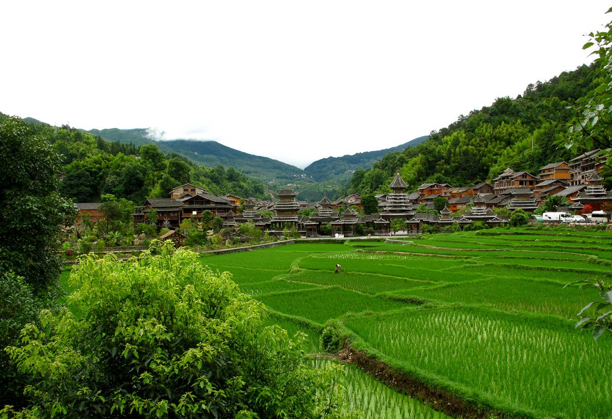
Land at HKG around 06:30 off the overnight transpacific. Airport Express to Kowloon, then Hong Kong West Kowloon station and the 11:14 train straight into Guizhou — mainland immigration is co-located at the station, so you clear China standing still. Congjiang in about four hours, and Zhaoxing is half an hour from the platform. Zhaoxing is the largest Dong village in China: five drum towers, one for each clan, and wind-and-rain bridges over the stream running through the middle. It has become genuinely touristy, so treat it as a comfortable base rather than the destination — the quiet is up the hill tomorrow. Sleep early and hard.
MoveHKG 06:30 · West Kowloon→Congjiang ~4h · drive ~30 minNightZhaoxingCrowds●●●●○
See itZhaoxing Dong Village·Photo-heavy guide·MTR high-speed destinations
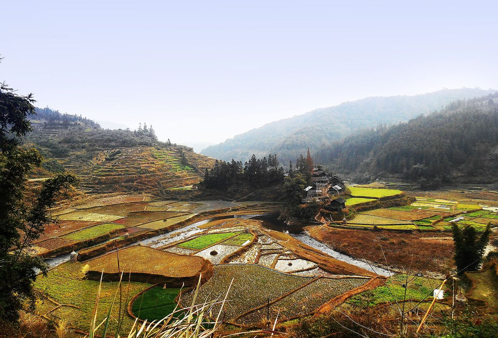
Hike the old stone path from Zhaoxing up to Tang'an, a small terraced Dong hamlet on the ridge above — roughly two hours up through rice terraces, with the valley opening behind you the whole way. Tang'an is an open-air ecomuseum and much quieter than Zhaoxing. Walk back down in the afternoon, or continue along the ridge if the weather is good. Evening: Dong polyphonic choir singing drifts through the village after dark, unamplified and unstaged if you find the right courtyard.
MoveWalking day, ~10–14 kmNightZhaoxingCrowds●●○○○
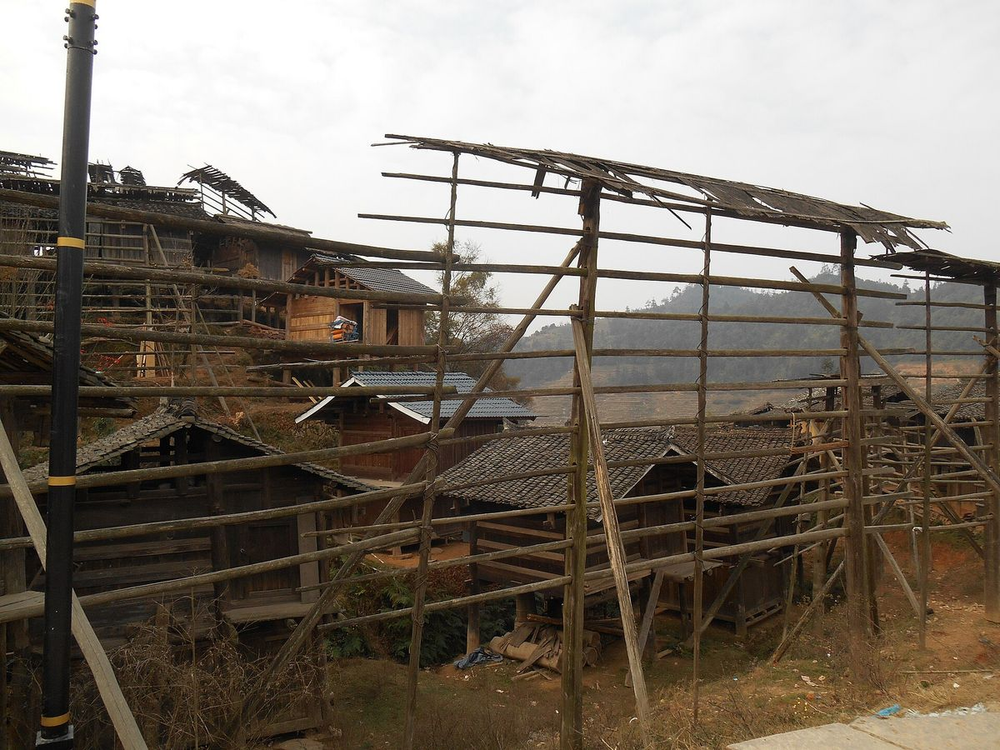
Morning at Basha — the Miao village whose men still carry matchlock rifles, the only civilian community in China licensed to do so, and who wear hand-woven hemp dyed with tree bark. The gunfire-and-lusheng welcome is arranged per group rather than run to a public timetable, so have the guide fix it in advance, and go early before the coaches. Afternoon: on to Rongjiang and the small Dong village of Zhanli, cut off enough that it still has its own customs.
MoveCongjiang→Basha ~30 min · on to Rongjiang ~1.5hNightRongjiang or DaliCrowds●●●○○ Basha · ●○○○○ Zhanli
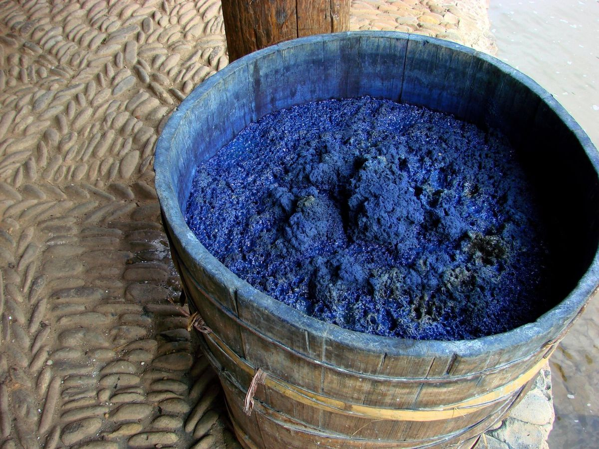
Morning in Dali Dong village on the Duliu River — six hundred years old, wooden balconies over the stream, and the indigo tradition that defines the place: women harvest the leaves from the hillsides, ferment them into paste, and dye cloth that takes about a year to finish a single bolt. Then the trip's one hard drive, north into the Leigong mountains, arriving at Langde in the afternoon for the long-skirt Miao village and its silver work.
MoveRongjiang→Leishan ~4h on mountain roadsNightLangde or LeishanCrowds●●○○○
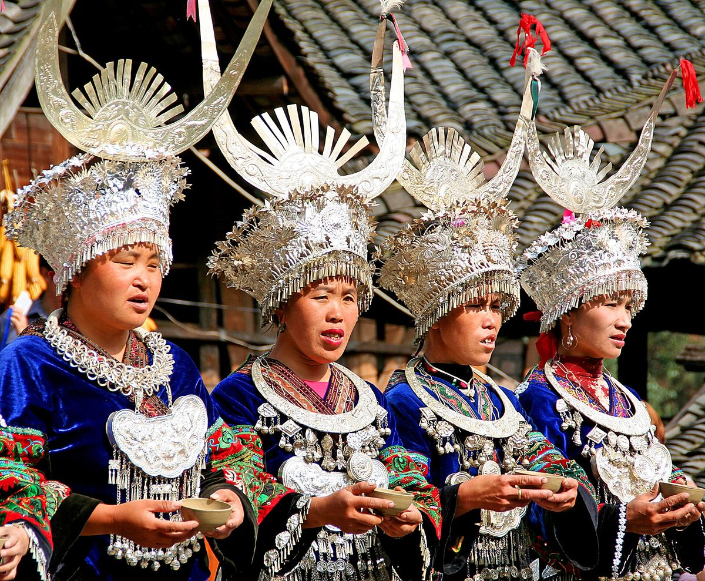
A full day walking the ridges that connect the Miao hamlets above Langde — the kind of hiking where you pass through three villages and see no other outsiders. Lunch is sour fish soup, ideally cooked in a hot stone pot: fermented rice water and tomato, sharp and clean, and the dish the whole province is built around. Afternoon with a silversmith or blacksmith if the guide can arrange it — Leishan is the centre of Miao silver work.
MoveHiking day, moderate to hardNightLangde or LeishanCrowds●○○○○ on the ridges
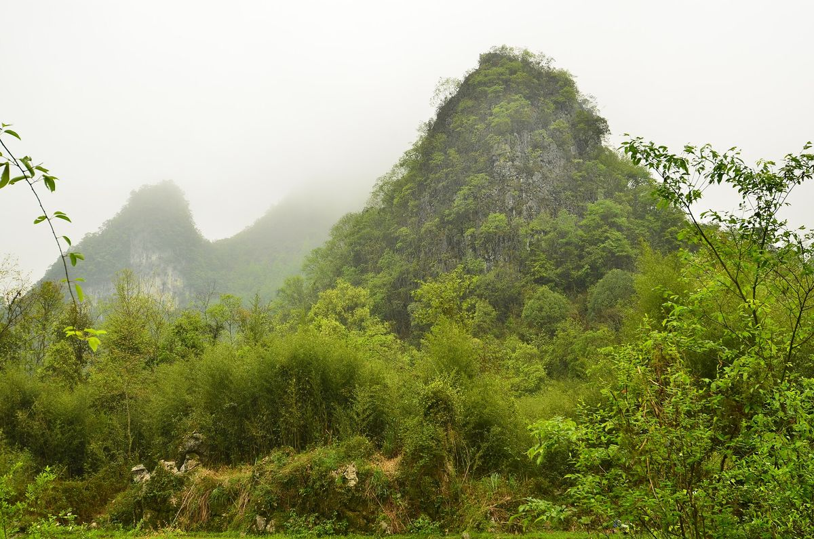
Drive west out of the Miao mountains to the Getu River, where the karst stops being scenery and becomes architecture: the Great Arch is one of the largest natural rock spans anywhere, with a cave system beneath it and a river running through. Local climbers free-climb the arch face. Boat in, walk the caves, and see the karst without the Yangshuo crowds. This is one of your two flexible days — if rain has cost you something earlier, spend it here.
MoveLeishan→Getuhe ~4–5hNightGetuhe or AnshunCrowds●●●○○
See itGetu River scenic area
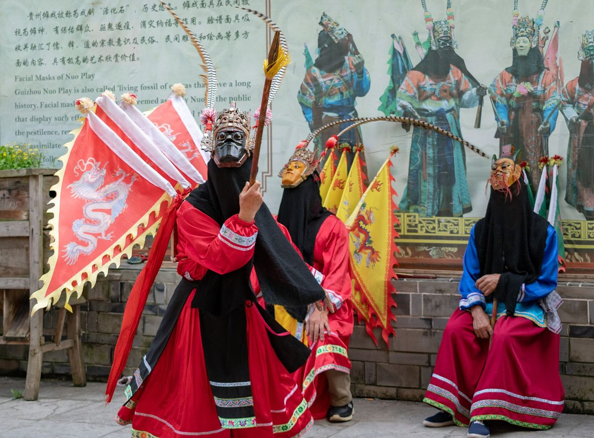
Back toward Guiyang, stopping at Qingyan — a Ming-dynasty walled garrison town thirty kilometres south of the city, and the right place to end Act I because it is a genuine eating destination. The list: Qingyan pig's trotters simmered with ginger, rice tofu, tofu balls, siwawa (vegetables rolled in a thin pancake), and a bowl of changwang noodles. Stay into the evening — the coach crowds leave at dusk and the lanes are worth walking after dark. Sleep near the airport; tomorrow starts early.
MoveGetuhe→Qingyan ~2.5hNightQingyan or GuiyangCrowds●●●●● midday · ●●●○○ after dusk
Days 8–14 · Sep 4 – Sep 10 · A second operator takes over here. This is Amdo Tibetan country in southern Gansu — no permits needed, unlike the Tibet Autonomous Region, and very few foreign visitors. Altitude runs roughly 2,900–3,000 m, high enough to notice on the first day but not high enough to need an acclimatization plan. The act now exits through Hui Linxia rather than in one seven-hour push.
Fly Guiyang to Lanzhou in the morning — the hinge of the whole trip, and mercifully short. From Lanzhou, drive south-west into the grasslands to Xiahe. The landscape changes completely within two hours: terraced green gives way to open high pasture, and the prayer flags start. Arrive in time for the evening kora, when the pilgrims walk.
MoveGuiyang→Lanzhou 1h35m · drive to Xiahe ~3h (220 km)NightXiahe
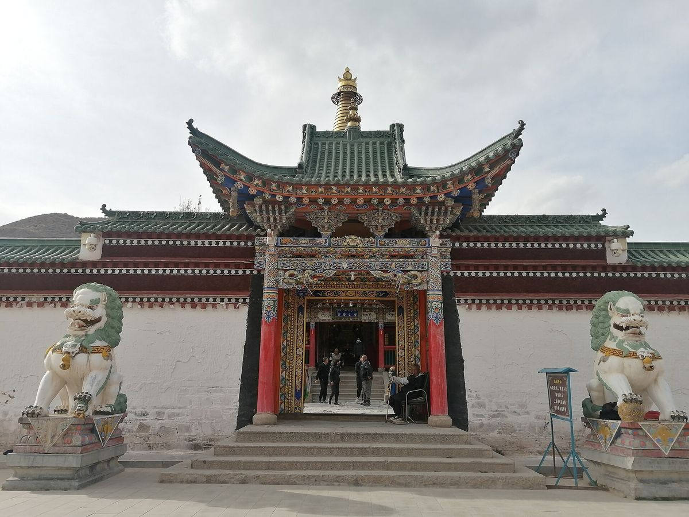
Labrang is one of the six great Gelug monasteries and, outside Tibet proper, the most important Tibetan Buddhist institution in China — founded 1709, still a working university with hundreds of monks. Its kora is 3.5 km, the longest pilgrim circuit in Tibetan Buddhism, lined with prayer wheels; walking it at dawn alongside the pilgrims is the thing to do here. Afternoon out to the Sangke grasslands, or the Ganjia basin with its octagonal walled ruin, and a visit to a Tibetan family.
MoveLocal, short drivesNightXiaheCrowds●●●○○ · ●○○○○ Ganjia
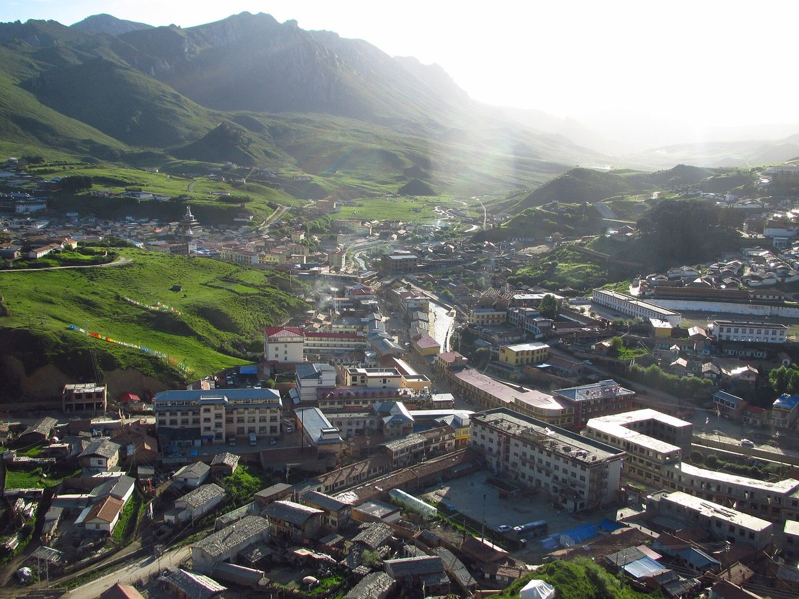
Drive south to Langmusi, a small monastery town straddling the Gansu–Sichuan border — the provincial line runs down the middle, with Sertri Gompa on the Gansu side and the 600-year-old Kirti Gompa on the Sichuan side. Alpine meadows and forested ridges surround it; the comparison people reach for is rural Austria, which is not quite right but not wrong either. Gahai Lake and open grassland on the way.
MoveXiahe→Langmusi ~3hNightLangmusiCrowds●●●○○
Morning hike up the Namo gorge behind Kirti Gompa — a narrow limestone cleft that opens into high meadow, a couple of hours up and back, and the sky-burial ground sits on the ridge above town (approach only if your guide says it is appropriate that day). Afternoon: the short drive to Zhagana, which is the reason this act exists.
MoveHike ~3h · Langmusi→Zhagana ~2hNightZhaganaCrowds●●○○○
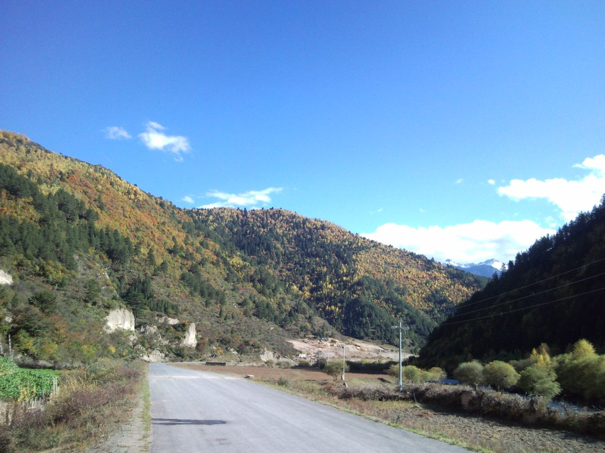
Zhagana means "stone box" in Tibetan: a natural amphitheatre of vertical limestone towers with four Tibetan villages, barley terraces and wooden houses stacked on the valley floor inside it. Three main trails climb out of the basin for the panoramic view down over the villages. Take the longest one you have daylight for, and treat that as the point of the day — the valley floor and the main viewpoints are a genuine domestic-tourism draw now and will be busy, while an hour up any trail the crowd vanishes entirely. Almost no foreign visitors reach Zhagana; that is not the same as it being empty.
MoveFull hiking dayNightZhaganaCrowds●●●●○ valley floor · ●○○○○ on the trails
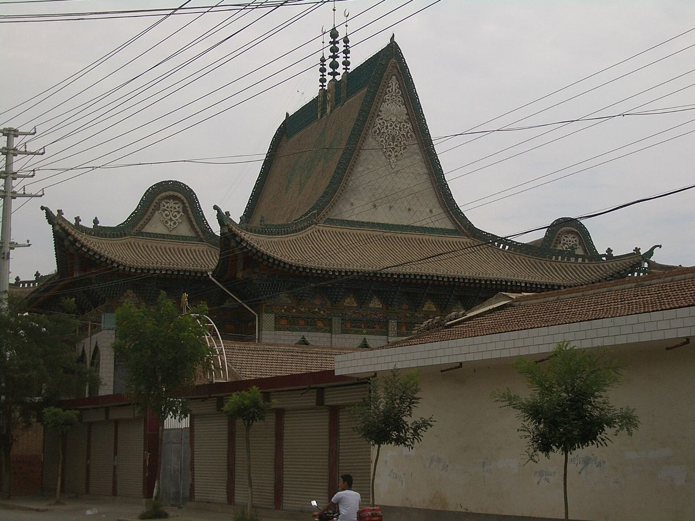
Out of Zhagana north through the grasslands, breaking at Hezuo, and down into Linxia — about four and a half hours instead of the seven this used to be. Linxia is the centre of Hui Muslim China, sometimes called its Little Mecca: eighty-odd mosques in the prefecture, the Bafang Shisan Xiang quarter of lanes and minarets, and a switch from Tibetan Buddhism to Islam so abrupt it reads as a different country. It is also a craft town — Linxia gourd carving, brick carving, and the Dongxiang and Bao'an minorities who live nowhere else. Eat the hand-pulled beef noodles here rather than waiting for Lanzhou.
MoveZhagana→Linxia ~4.5h via HezuoNightLinxiaCrowds●●○○○
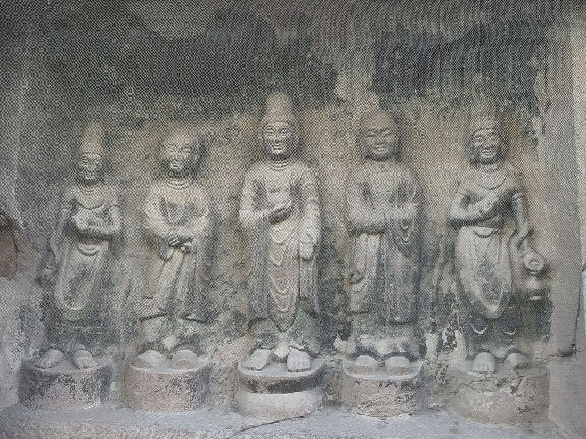
Drive to the Liujiaxia reservoir and take a boat across to Bingling Temple: a cliff of Buddhist caves cut over sixteen hundred years, from the Western Qin onward, with a 27-metre Maitreya carved into the rock face and a gorge of eroded pinnacles behind it. It is reachable only by water, which is a large part of why it survived the centuries that flattened easier targets — and a good primer for Mogao at the other end of the trip. On to Lanzhou in the afternoon. If there is energy left, the Gansu Provincial Museum holds the best Silk Road collection in the country: free but reservation-only, and September falls inside the window when the original Bronze Galloping Horse is on display rather than the replica. Early night; tomorrow is a rail day.
MoveLinxia→Liujiaxia ~1h · boat ~1h each way · on to Lanzhou ~2hNightLanzhouCrowds●●○○○
See itBingling Temple·Gansu Provincial Museum·The Flying Horse of Gansu
Days 15–18 · Sep 11 – Sep 14 · The infrastructure gets easy here: high-speed rail between cities, day drivers for the desert sites. September is the ideal window — dry, clear, and before the October Golden Week crush. You are skipping Jiayuguan's Great Wall fort deliberately, since Romy sees the Wall properly from Beijing on Sep 17.
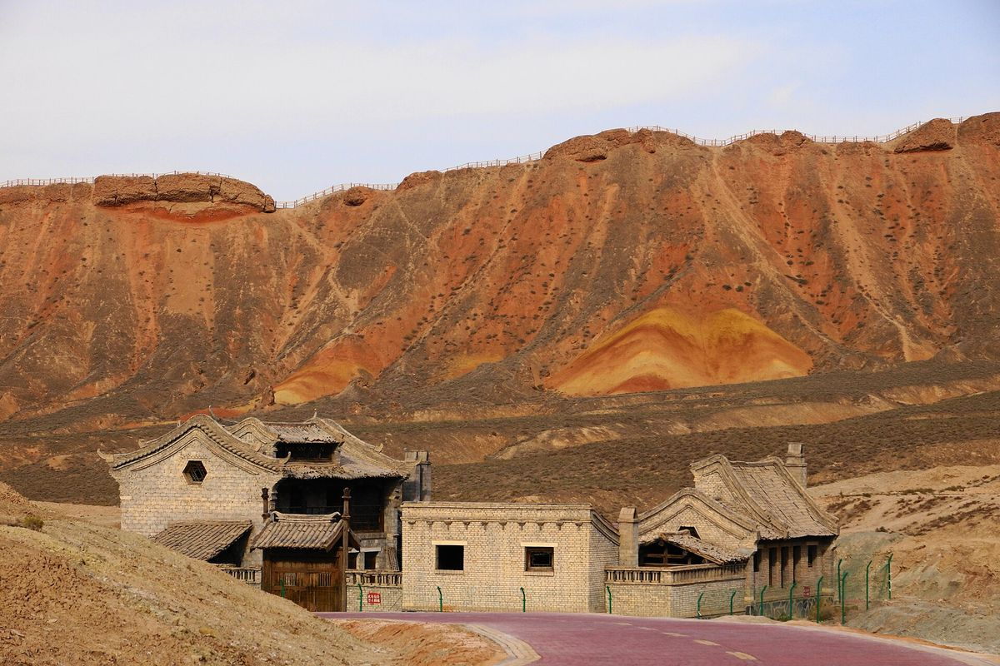
High-speed rail north-west to Zhangye, into the Hexi Corridor — the thin strip of oasis between desert and mountain that the entire Silk Road had to thread. Late afternoon at the Danxia landforms: sandstone laid down in stripes of red, orange, cream and green, tilted on end and stripped bare. Go late, roughly two hours before sunset when the light is low and the colour saturates; the quieter Binggou canyon nearby is the version without the crowds.
MoveLanzhou→Zhangye by rail ~3hNightZhangyeCrowds●●●●● main park · ●●●○○ Binggou
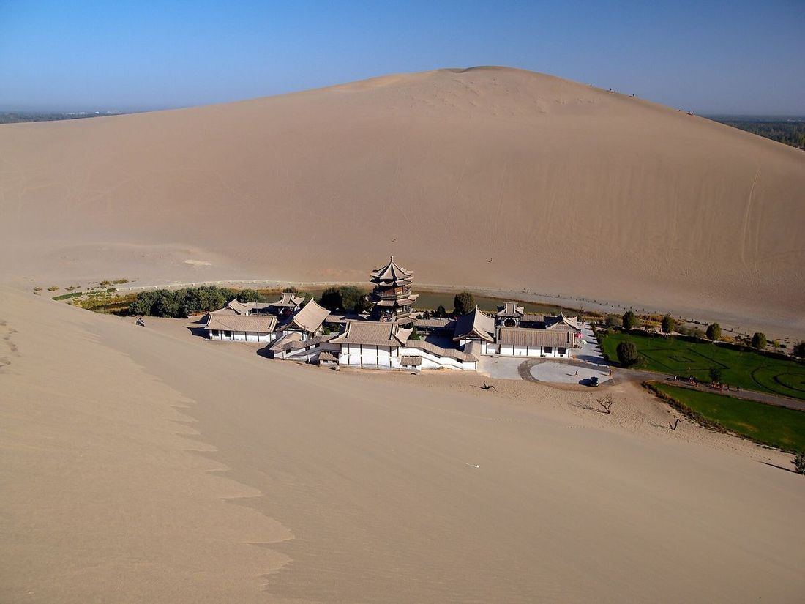
Back to the Danxia at opening for the dawn light and an empty park — worth the alarm, and the difference between opening and midday here is the difference between a landscape and a queue. Then west to Dunhuang, the last real oasis before the desert proper. Arrive late afternoon and go straight to Mingsha Shan: dunes several hundred metres high with Crescent Lake, a spring-fed pool shaped like its name, sitting in a hollow between them and somehow never buried in all the centuries it has been recorded. Climb for sunset, and walk out along the ridge away from the camel strings.
MoveZhangye→Dunhuang by rail ~5h or short flight — let the operator pickNightDunhuangCrowds●●●●● at the lake · ●●○○○ out on the dunes
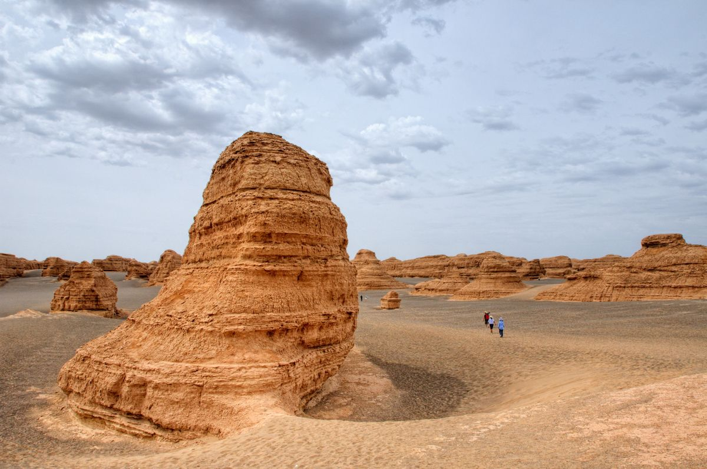
A full day out into the desert west of Dunhuang, and the emptiest landscape of the trip. Yumen Pass — the Jade Gate — is a lone rammed-earth block on gravel plain, the checkpoint everything bound for Central Asia once passed through. Nearby, eroded ramparts of the Han-dynasty Great Wall, older than the Ming brickwork tourists know, built of reeds and sand. Then the Yardang geopark, wind-carved rock formations in an old lakebed that the Chinese call the Ghost City; stay for sunset if the guide is willing. Your second flexible day — this is the one to shorten if the schedule has slipped.
MoveFull-day car ~8:30am–6:30pm, no public transport out thereNightDunhuangCrowds●●○○○ Yumen · ●●●○○ Yardang
See itYumen Pass·Yardang geopark
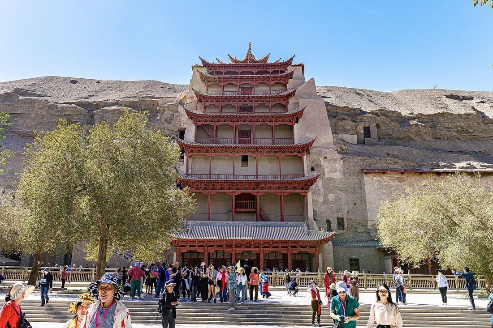
The Mogao Grottoes to finish: seven hundred caves cut into a cliff over a thousand years, painted floor to ceiling, the greatest surviving repository of Buddhist art anywhere. Take the 9am English tour — the ¥258 "A" ticket covers eight caves plus the digital films. Remember foreigners cannot book this through the WeChat system; the allocation is sold in person at the Digital Exhibition Centre, so have the operator handle it days ahead. Afternoon flight to Beijing, landing in the evening.
MoveDunhuang→Beijing, afternoon/evening flightNightBeijingCrowds●●●●○ but capped and timed
Four seminar days across nine. Romy is on her own for those four, so each one below has a plan and — where it matters — a reservation that has to be made in advance. Several Chinese sites are real-name booking with a passport number and genuinely sell out; those are items 29–30 on the to-do list.
Sleep in. You have just come off eighteen consecutive days of moving, and tomorrow is the seminar that pays for the trip. Keep it to walking distance: the lanes around the Lama Temple and Wudaoying, lunch somewhere with air conditioning, and Beihai Park in the late afternoon when the light comes off the lake. Do not attempt the Great Wall today — it is a full day out and it belongs to Sep 17.
Both of youFreeReservations neededNone
Itzhak: Tsinghua School of Economics and Management. Host Prof. Zhishu Yang; logistics through Yiying Wang. The paper is the FIRE piece, about an hour, PhD students plus any interested faculty. This is the visit the $15,000 honorarium is attached to — and that payment depends on your US-passport entry and exit stamps, so keep the passport pages clean and photograph them.
Crowds●●●●● Forbidden City · ●●●○○ JingshanReservationsForbidden City, 7 days out
Itzhak: Peking University, Guanghua School of Management. The date is confirmed but there is still no direct contact on file — it has all gone through Zhishu Yang. Fix that before you fly (to-do item 40); you do not want to be chasing a room number on the morning of.
Crowds●●○○○ Jinshanling · ●●●●○ MutianyuReservationsCar + driver, booked Sep 15
Keep this loose — it is the day either school will ask for if they want a second meeting, and the HKU thread could still land here. If it stays free: Temple of Heaven park at 7am, before the ticketed halls open, when the park belongs to locals doing tai chi, ballroom dancing and jianzi. It is the most alive Beijing gets. Then 798 Art District in the afternoon — a decommissioned Bauhaus-plan factory complex full of galleries — or swap in the Summer Palace if Romy wants the classic, accepting that it is overrun.
Both of youFree unless a school claims itCrowds●●●○○ park at 7am · ●●●●○ the halls later
Book an afternoon flight, because the morning has one thing worth planning around: Panjiayuan, the antiques and curiosities market, which is only really itself on Saturday and Sunday mornings. Go at 7–8am when the dealers are still unpacking. Then the airport, and Shenzhen by evening — about three hours in the air. Evening: the Shenzhen Bay waterfront or Talent Park, with Hong Kong's hills directly across the water.
MoveBeijing→Shenzhen ~3h, afternoonCrowds●●●●○ Panjiayuan
Both of you are free, and this is the day to leave the city. Dapeng Fortress is a walled Ming garrison town on the peninsula east of Shenzhen, about ninety minutes out, and beyond it the Xichong and Yangmeikeng coast — headlands, a real beach, and a coastal trail. It is the one genuinely quiet day available here and the antidote to a week of seminars.
Do not use this day for a Hong Kong trip. Romy is in China on a single visa-free admission. Leaving the mainland and coming back requires a fresh admission, which is not something to gamble on mid-trip with four days of commitments still ahead. Hong Kong comes on the 23rd, when you are leaving anyway.
Both of youFreeCrowds●●○○○
Itzhak: Chinese University of Hong Kong, Shenzhen. Host contact Houning Ma; Jiaxing Tian handles visa and logistics. No honorarium or reimbursement terms have ever been discussed here — probably not worth pushing for a number, but do ask about the hotel (to-do item 39).
Crowds●●●○○ Dafen · ●●●●○ Huaqiangbei
Itzhak: PHBS. Host Fangyuan Ma; Zoe Huang for reimbursement. RMB 5,000 before tax covering meals, lodging and local transport. Their airfare reimbursement is narrow — economy only, most direct route to or from Shenzhen or Hong Kong, within one day either side of today — which in practice covers the Sep 23 departure leg or roughly half a round-trip fare. They offered to review the itinerary before you book; take them up on it (to-do item 37).
Crowds●●●○○ both
Two ways across, and they suit different flights. By rail: Futian station to Hong Kong West Kowloon is about twenty minutes, then the Airport Express is another twenty-five to HKG — allow two and a half hours door to airport with immigration at both ends. If your flight is in the evening this leaves real time in Hong Kong: the Star Ferry across the harbour, Man Mo Temple, the Mid-Levels escalators. By ferry: Shekou to the HKG SkyPier delivers you airside without formally entering Hong Kong, which is simpler if you have checked bags and no appetite for the city.
Either route stamps your US passport out of the mainland. Photograph the entry and exit pages before you leave the airport — Yiying Wang needs both before Tsinghua can move the honorarium.
MoveFutian→West Kowloon ~20 min · Airport Express ~25 minAllow2.5h door to airport
Forty-three items, in the order they gate each other. Where there is a real choice, the alternatives are listed with the recommendation first. Nothing in sections C onward is safe to pay for until section A clears.
| # | Item | By when | Options and alternatives |
|---|---|---|---|
| A · Gating — these block everything else | |||
| 1 | Passport at ServiceIn. Confirm the ~Aug 20 return against an Aug 26 departure and price the expedite. | This week | (a) Standard, target Aug 20 — six days of margin. (b) Pay the expedite for ~Aug 13 and buy back a week of certainty; probably worth it given how much is downstream. (c) If it slips past Aug 24, invoke the pre-agreed fallback: drop Getuhe and one Dong village day, depart Aug 29–30, Gannan and the Silk Road untouched. |
| 2 | Confirm Greek-passport visa-free entry is accepted at the Hong Kong West Kowloon mainland port. | Before Aug 13 | (a) Ask ServiceIn — they handle this daily and will answer fastest. (b) Chinese Embassy or Consulate — authoritative but slow. (c) MTR high-speed customer service, which knows that specific port. Get two of the three to agree. If it is not a clear yes: switch to item 10(c), the HKG→Guiyang flight. |
| 3 | Read the F visa's three fields the day it arrives. | ~Aug 20 | Enter-before date on or before Aug 28 · duration of stay per entry ≥ 26 days · multiple entry. Any one of those failing changes the plan, so read them before confirming the international ticket. |
| 4 | OSU loaner laptop from Secure Research. | This week | ~2 weeks lead time per your own tech notes. Request now; there is no alternative that keeps you compliant. |
| B · Tour operators — the scarcest resource in the plan | |||
| 5 | Guizhou operator — 6 days, private guide-interpreter plus driver. | Enquire now · deposit by Aug 7 | (a) Billy Zhang, toguizhou.com — ethnic Miao, one of very few English-speaking guides in the southeast. (b) Zeng Ou Wu — ethnic Dong, 15+ years with CITS Southeast Guizhou in Kaili. (c) A Guiyang agency subcontracting locally — last resort, and the one most likely to steer you to Xijiang Qianhu. Get at least two quotes. None of these is vetted; read recent reviews yourself. |
| 6 | Gansu + Gannan operator — 11 days, Lanzhou round trip plus the Silk Road. | Enquire now · deposit by Aug 7 | (a) China Culture Tour — the warm lead; they already quoted Stephan Siegel for Gansu, so ask them to add Gannan and the new Linxia–Bingling exit. (b) China Odyssey Tours. (c) Windhorse Tour. (d) Silk Road Travel. Anchor every quote against Stephan's ~$2,217 per person for 8 days fully inclusive — roughly $550/day for two. |
| 7 | Fix the operator enquiry template before you send it. | Now | The saved draft opens "My wife and I" — which is not who is travelling, and operators will build the trip around it. Also add: the Guizhou arrival is by rail into Congjiang, not by air into Guiyang, so they must meet the train. |
| 8 | The four things to insist on in every quote. | With the quote | A named English-speaking guide, with a WeChat message exchanged before you pay — not "a guide will be assigned" · an SUV or MPV with a driver who has personally driven Rongjiang–Leishan and Langmusi–Zhagana · written inclusions covering tolls, parking, the driver's meals and lodging, and entrance fees · a specific rain contingency, not reassurance. Be wary of anyone demanding the full amount up front. |
| 9 | Confirm lodging inside Zhagana, not in Diebu town. | With the quote | Sleeping in the basin is the difference between the trails at dawn and a commute. Non-negotiable. |
| C · Flights and rail — eight tickets | |||
| 10 | CMH ⇄ HKG, out evening Wed Aug 26, back Wed Sep 23. One round trip. | Aug 1–7, changeable fare | (a) Via JFK — Cathay departs ~01:35, lands HKG 06:30. (b) Via SFO or LAX — ~00:05–00:30 departures, HKG ~06:00. (c) Via Tokyo, Seoul or Taipei — usually lands HKG in the evening and throws away the day you just bought. Take (a) or (b), and verify the actual Aug 26/27 timetable rather than trusting these typical times. |
| 11 | HSR Hong Kong West Kowloon → Congjiang, Fri Aug 28. | ~Aug 13, when the window opens | (a) Direct G-train, ~4h. The three daily West Kowloon→Guiyang services leave 10:02, 11:14 and 11:52 and run over the line that serves Congjiang and Rongjiang — book West Kowloon→Congjiang and confirm your train stops there. Take the 11:14 or 11:52; the 10:02 is too tight against a 06:30 landing. (b) West Kowloon→Guilin North, change there. (c) Fly HKG→Guiyang (~2h, several daily) then HSR Guiyang→Congjiang (~1h) — the fallback if item 2 fails. Same day, same village. |
| 12 | Guiyang (KWE) → Lanzhou (LHW), Fri Sep 4 morning. | Aug 1–7 | 1h35m direct. The hinge of the whole trip — book early, and do not take the last departure of the day. There is no rail alternative worth considering at this distance. |
| 13 | Lanzhou → Zhangye, Fri Sep 11 midday. | ~Aug 27 for rail | (a) HSR ~3h on the Lanzhou–Xinjiang line — recommended. (b) Fly, ~1h, but the airport transfers at both ends eat the saving entirely. |
| 14 | Zhangye → Dunhuang, Sat Sep 12. | Aug 1–7 | (a) Rail, ~5h. (b) Short flight. Genuinely close — hand this to the Gansu operator to price both against that specific date, since the answer depends on the day's schedule. |
| 15 | Dunhuang (DNH) → Beijing, Mon Sep 14 afternoon. | Aug 1–7 | (a) Direct where the season supports it. (b) Via Lanzhou. (c) Via Xi'an. Take the earliest afternoon option that still clears the 9am Mogao tour — a delay here costs you rest, not a commitment, but you want the buffer. |
| 16 | Beijing → Shenzhen (SZX), Sat Sep 19 afternoon. | Aug 1–7 | ~3h, many daily. Afternoon specifically, so Panjiayuan is possible in the morning. |
| 17 | Sep 23, Shenzhen → HKG. | No booking needed | (a) Futian → West Kowloon HSR (~20 min) then Airport Express (~25 min) — flexible, and leaves room for a few hours in Hong Kong. (b) Shekou → HKG SkyPier ferry — delivers you airside without entering Hong Kong; book ahead, fewer sailings. (c) Shenzhen Bay cross-border coach. Allow 2.5h door to airport on any of them. |
| D · Hotels — eleven nights you book, ten the operators do | |||
| 18 | Hong Kong, Aug 28 — refundable backup only. | Aug 8–14 | You should be on the train by 11:14 and never use this. Hold a free-cancellation room anyway, in case the transpacific slips a day; cancel it once you land. |
| 19 | Guiyang, Sep 3 — airport side. | Aug 8–14 | Or Qingyan itself if the operator prefers; the constraint is a comfortable early start for the Sep 4 flight. |
| 20 | Linxia, Sep 9 · Lanzhou, Sep 10 · Zhangye, Sep 11 · Dunhuang, Sep 12–13. | Aug 8–14 | (a) Let the Gansu operator bundle them — simpler, and they know which Dunhuang hotels handle foreigners without fuss. (b) Book yourself on the usual sites for a little less money and more control. Either is fine; do not leave them unbooked. |
| 21 | Beijing, Sep 14–18 — five nights. | Chase Yiying this week | You asked Yiying Wang about hotel coordination across the universities on Jul 6 and never got a straight answer. Chase it. (a) Tsinghua arranges it. (b) Book yourself near Wudaokou for the campus commute. (c) Book yourself in the centre near the hutongs — better for Romy's four days, worse for your two mornings. (c) is probably right given the split. |
| 22 | Shenzhen, Sep 19–22 — four nights. | Ask the hosts this week | (a) CUHK-SZ or PHBS arranges it. (b) Futian — easiest exit on the 23rd, on the HSR line to Hong Kong. (c) Nanshan — closer to both campuses. Ask the hosts first; they may simply book it. |
| 23 | Village lodging, Aug 28 – Sep 8. | Operators, confirmed in writing by Aug 14 | Homestays that cannot be booked online at all — this is precisely what you are paying the operators for. Get the list in writing with village names, not "local guesthouse". |
| E · Timed tickets and reservations — the section that bites | |||
| 24 | Mogao Grottoes, 9am English tour, Sep 14. | Operator, days ahead | The foreigner allocation is sold in person at the Digital Exhibition Centre, ~9 km outside Dunhuang, and cannot be booked on the WeChat mini-program. ¥258 "A" ticket, eight caves plus the films. Get the method and the date in writing from the operator. There is no self-service alternative. |
| 25 | Bingling Temple boat, Sep 10. | Operator, with the quote | Confirm it runs on that date and at what reservoir level, and whether it is the speedboat (~1h each way) or the slow ferry (~2–3h) — that choice decides whether Day 14 also fits the Gansu Provincial Museum. |
| 26 | Gansu Provincial Museum, Sep 10. | ~1 week ahead | Free but reservation-only. September falls in the window when the original Bronze Galloping Horse is displayed rather than the replica, which is the whole reason to go. |
| 27 | Forbidden City, Sep 16 — Romy solo. | Sep 9, seven days out | Real-name, passport-number booking, and it sells out. (a) Book via the official channel with her passport. (b) Have the Beijing hotel concierge do it — the reliable route when the mini-program refuses a foreign passport. Arrange (b) as a backstop on arrival. |
| 28 | Great Wall car and driver, Sep 17 — Romy solo. | Sep 15, through the hotel | (a) Jinshanling, ~2.5h each way — partly unrestored, dramatic, quiet. Recommended. (b) Mutianyu, ~1.5h — restored, cable car, busy; the easy fallback. (c) Jiankou — wild, steep, needs a guide, not a solo first visit. Agree the return time in writing. |
| 29 | Basha welcome ceremony, Aug 30. | Operator, in advance | Arranged per group rather than run to a public timetable — if nobody books it, it does not happen. Ask for it early in the morning, before the coaches. |
| 30 | A silversmith or blacksmith visit near Leishan, and one village meal. | Operator, with the quote | Optional, and the best use of having an interpreter. Worth naming explicitly in the enquiry so it gets priced rather than improvised. |
| F · Money, tech, devices — all of it before you fly | |||
| 31 | Both VPNs installed and tested. | Before Aug 26 | Per your existing tech notes. Two, not one, because one will fail. This cannot be fixed after you land. |
| 32 | eSIM loaded; Alipay and WeChat Pay linked to a foreign card. | Before Aug 26 | Covers roughly 95% of city merchants. Test a real transaction before you leave. |
| 33 | Pleco and offline Amap downloaded. | Before Aug 26 | Offline maps specifically — Gannan and deep Guizhou have patchy data. |
| 34 | RMB cash. | Hong Kong or Guiyang, then again in Lanzhou | Deep Guizhou villages and Gannan run on cash. Do not assume a homestay takes anything else. Two draws, not one. |
| 35 | Devices backed up and cleaned per OSU policy. | Aug 22–25 | |
| 36 | Travel insurance covering hiking at ~3,000 m. | Aug 8–14 | Check the altitude and remote-evacuation clauses specifically — Zhagana and the Leigongshan ridges are a long way from a hospital. |
| G · Work-trip admin — the money and the open questions | |||
| 37 | Send PHBS the itinerary before booking tickets. | Now | They explicitly offered to review it first. Their reimbursement is economy-only, most direct route to or from Shenzhen or Hong Kong, within ±1 day of Sep 22 — so the HKG round trip is the right shape, but let them confirm what they will actually pay against it. |
| 38 | Confirm the honorarium mechanics with Yiying Wang. | Before you fly, and again after | $15,000 flat, paid after the visit, replacing airfare reimbursement entirely. Conditional on entering and exiting China on the US passport under the F visa, because the beneficiary name must match. Send both stamp pages after the trip. Photograph them at the border so you are not relying on one copy. |
| 39 | CUHK-Shenzhen: ask about honorarium and hotel. | This week | Never discussed. Ask Houning Ma or Jiaxing Tian. Realistically, do not push for a fee — if they intend to offer, they will raise it unprompted the way PHBS did. Do ask about the hotel, which they may simply cover. |
| 40 | PKU Guanghua: get a direct contact. | This week | You have a confirmed date, Sep 17, and no one to email. Everything has gone through Zhishu Yang. Ask him for the department contact now rather than on the morning of. |
| 41 | HKU / "Roni" — dropped or live? | This week | Raised Apr 19, silent since. If it is live it needs a slot, and the only free days are Sep 18 in Beijing or Sep 20 in Shenzhen — and Sep 20 is currently the one quiet day of the work block. Decide rather than let it arrive. |
| 42 | San Francisco stopover to see your parents. | Before booking, Aug 1–7 | Raised Jul 3, silent since. (a) Drop it. (b) Add it on the return and accept that it likely breaks PHBS's "most direct route" condition — price the reimbursement you would forfeit against the visit. (c) Separate ticket, so the China round trip stays clean for reimbursement. |
| 43 | Print pack. | Aug 22–25 | This itinerary, the signed invitation letter, both operator confirmations with guide names and WeChat contacts, and the two-passport carry sheet marked backup only. Paper, because the VPN will fail at the wrong moment. |
Split the itinerary at Day 7. Send Act I to the Guizhou operator and Acts II–III to the Gansu operator, and ask each to price their half against it. Points to make explicit:
| When | Do |
|---|---|
| Now Jul 25–31 | Items 1–9, 21–22, 37–42. The passport is the gate and the Guizhou guide is the scarce resource, so those two calls come first. Send the corrected operator enquiry to 2–3 Guizhou and 2–3 Gansu operators. Request the OSU laptop. Confirm the West Kowloon port question. Chase the Beijing and Shenzhen hotels with your hosts. |
| Week 2 Aug 1–7 | Items 10, 12, 14–16, 42. Compare quotes, pick one operator per act, lock the itinerary in writing, pay deposits — Guizhou first. Book the changeable HKG round trip and the domestic flights. Decide the San Francisco question before the ticket is issued. |
| Week 3 Aug 8–14 | Items 18–20, 23, 31–33, 36, and 11 the day the rail window opens (~Aug 13). Operators confirm rural lodging and the Mogao arrangement in writing. All the tech has to be installed and tested now, not later. |
| Week 4 Aug 15–21 | Item 3. Passport back ~Aug 20 — read the visa's three fields, then confirm the international ticket. Final written confirmations from both operators with guide names and WeChat contacts. |
| Final days Aug 22–25 | Items 34, 35, 43. Draw RMB. Print the pack. Back up and clean the devices. |
| Depart Wed Aug 26 | CMH in the evening. Hong Kong at 06:30 on the 28th. Zhaoxing that afternoon. |
| In China | Item 26 a week before Sep 10 · item 27 on Sep 9 · item 28 on Sep 15 · item 38 at the border on Sep 23. |
Maps drawn from Natural Earth public-domain vector data. All photographs from Wikimedia Commons under Creative Commons licences, resized for the web. In order of appearance: Hong Kong Harbour — Benh Lieu Song, CC BY-SA 4.0 · Zhaoxing — Rutger van der Maar, CC BY 2.0 · Congjiang terraces and Basha village — 龙歌谷, CC BY-SA 3.0 · Guizhou indigo — gitane, CC BY 3.0 · Langde — Tianjin24, CC BY 2.0 · Libo karst — Fanghong, CC BY-SA 3.0 · Qingyan — xiquinhosilva, CC BY 2.0 · Labrang — Yumeto, CC BY-SA 4.0 · Langmusi — NoGhost, CC BY-SA 4.0 · Yiwa valley — gaoxs, CC BY-SA 3.0 · Linxia Dongguan Mosque — Vmenkov, CC BY-SA 3.0 · Bingling Temple — Thebrainchamber1, CC BY-SA 4.0 · Zhangye Danxia — Terry Wu, CC BY-SA 2.0 · Crescent Lake — Alex Kwok, CC BY-SA 3.0 · Yardang geopark — lwtt93, CC BY 2.0 · Mogao Cave 96 — N509FZ, CC BY-SA 4.0.
{kind=link}
{kind=link}
.jpg){kind=link}
.jpg){kind=link}
{kind=link}
.jpg){kind=link}
{kind=link}
.jpg){kind=link}
{kind=link}
{kind=link}
{kind=link}
{kind=link}
{kind=link}
{kind=link}
{kind=link}
{kind=link}
.jpg){kind=link}